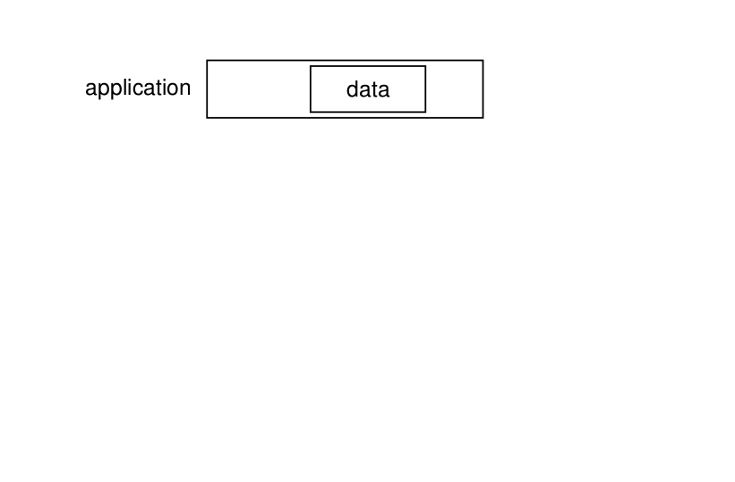
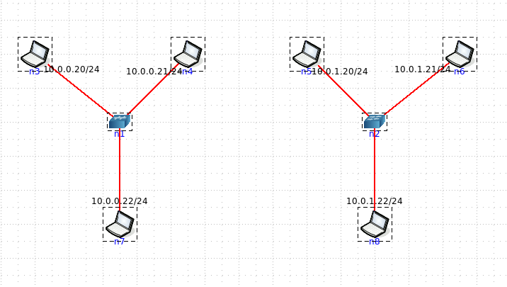

ARP - Hub versus Switch
Rappel : Depuis l'émission d'un paquet par une application : par exemple, la requête GET d'une page HTML et son arrivée sur le medium physique, celui-ci traversera cinq couches protocolaires. Lors de cette traversée, chaque couche va ajouter un en-tête avec des informations protocolaires qui lui sont propres (comme représenté par l'animation ci-dessous). La couche transport va ajouter le numéro de port (service) dans un en-tête fournit par le protocole de transport qui sera utilisé (TCP, UDP, ...) puis le transmettre à la couche réseau pour adressage et ainsi de suite avec les couches qui suivent. On dit que chaque couche va encapsuler les données de la couche supérieure. Une capture de paquet (avec un logiciel tel tcpdump ou wirehsark) vous permet alors de décapsuler cet ensemble en affichant les en-têtes ajoutés par chacune de ces couches.

Dans ce TP nous allons nous intéresser spécifiquement à la couche liaison des données et notamment aux adresses MAC vu lors de ce cours. En particulier, nous allons illustrer comment les adresses MAC sont utilisées par les éléments actifs du réseau. De façon très générique, nous allons illustrer la différence entre un hub et un switch (commutateur niveau 2). Un hub illustre aussi bien ce qui se passe sur une liaison sans-fil tandis que le switch illustre le comportement de tout type de switch, y compris ceux que vous verrez plus loin dans ce parcours et notamment les switchs avioniques AFDX.

Veillez à bien respecter l'ordre de ce lab :
- Composez deux réseaux en étoile avec 3 hôtes connectés à un hub et 3 hôtes connectés à un swicth comme illustré sur le schéma ci-dessus
- Ouvrez un terminal sur une machine de chaque topologie (par exemple n3 et n5 sur le schéma ci-dessus) et tapez arp -a pour vérifier que le cache ARP de chacune est bien vide
- A partir de chacun terminal, faites un ping vers une autre machine et consultez de nouveau le cache ARP. Qu'obtenez-vous ?
- Stoppez et redémarrez de nouveau la simulation
- Refaire la procédure #2.
- Sur une autre machine de chaque topologie (par exemple n4 et n6) lancez une capture de paquets avec la commande suivante :
tshark -i eth0 -e ip.addr -e eth.addr -Tfields (ou utiliser Wireshark si vous préférez)
- Faites un ping vers la troisième machine de chaque topologie (n7 et n8) depuis les terminaux ouvert en procédure #2. (n3 et n5)
- Notez les en-têtes MAC et IP reçus, qu'est-ce que vous observez au sujet du premier paquet capturé par tshark?
- Consultez cette page puis déterminez quels types de paquets sont visibles dans chaque expérience